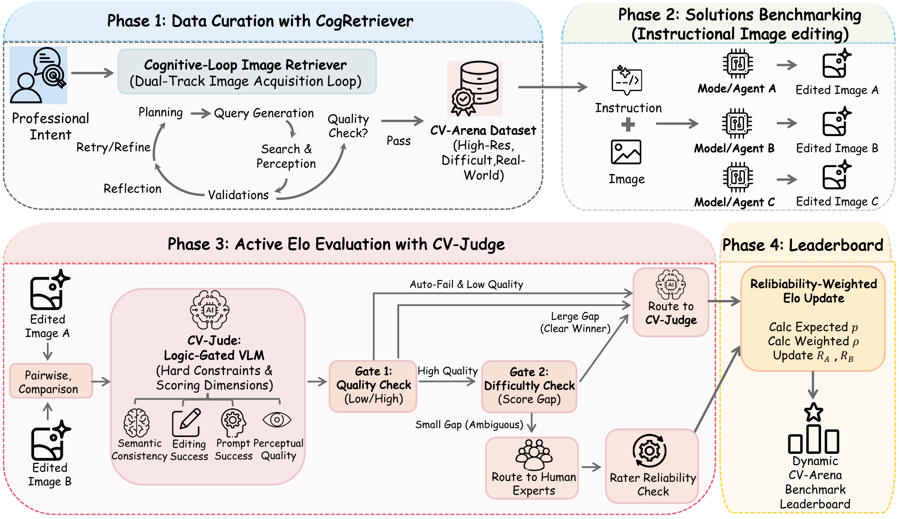
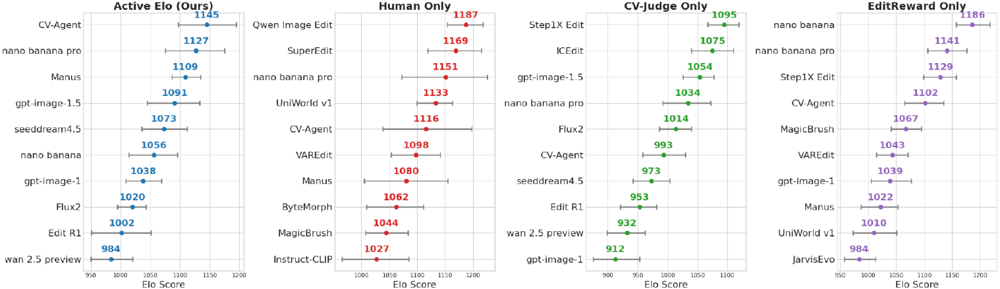
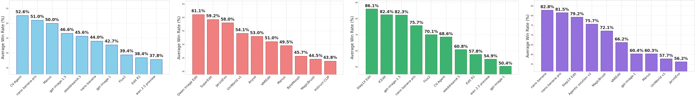
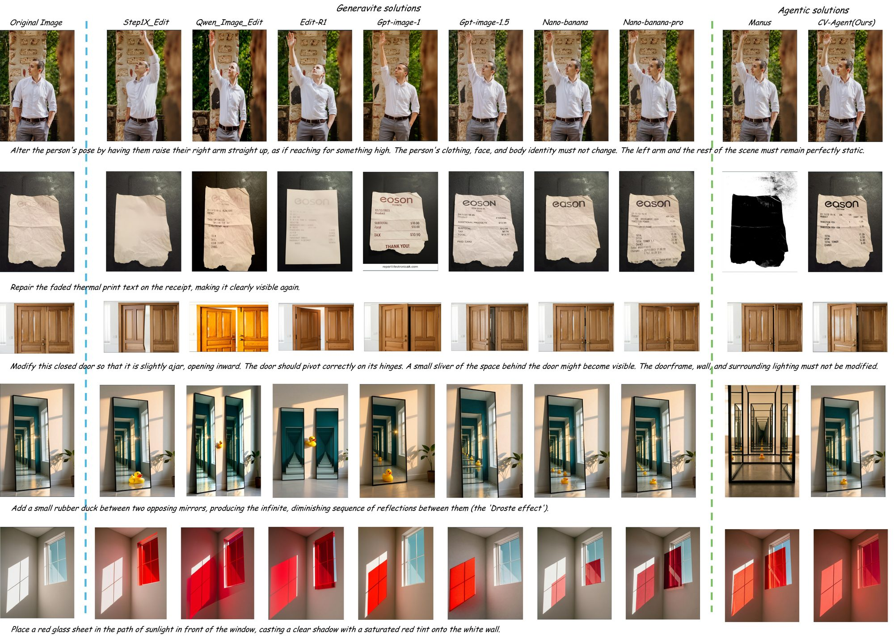
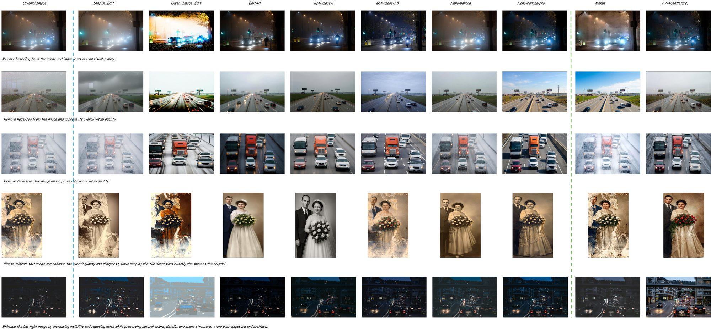
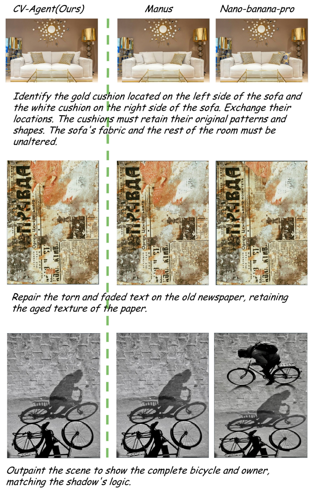

1Texas A&M University · 2Worcester Polytechnic Institute · 3Tohoku University · 4Georgia Institute of Technology · 5NVIDIA · 6UC Merced
★Corresponding author: tzz@tamu.edu
Instruction-guided image editing is becoming a general interface for visual work, yet existing benchmarks still focus largely on narrow appearance edits and do not fully capture the diversity of real-image tasks in professional workflows. Here, we define instructional computer vision problem solving as a broader formulation of image editing: given a real input image and a natural-language instruction, a system must produce an edited output that realizes the requested transformation while satisfying explicit preservation, geometric, physical, and usability constraints.
We introduce CV-Arena, an open benchmark designed to evaluate this capability at professional scales. CV-Arena contains 12K high-resolution real-image instruction pairs spanning 16 instruction-based visual task types, constructed using CogRetriever, a dual-track retrieval-and-curation pipeline that combines targeted web search, agentic query refinement, verification, and traceability.
To evaluate models at scale while preserving human fidelity, we propose Active Elo, a human-AI collaborative preference protocol that leverages CV-Judge — a logic-gated, multi-dimensional VLM evaluator — to reject clear failures and resolve high-confidence comparisons, and to route close, high-quality comparisons to expert raters. Mixed human and AI supervision is then aggregated through reliability-weighted Elo updates.
Our comprehensive evaluation of 21 systems, including proprietary, open-source, and agentic models, on CV-Arena reveals persistent gaps in instruction adherence, physical reasoning, structural control, and fine-grained detail preservation. We further develop CV-Agent, a lightweight agentic model that combines planning, editing, and verification, and demonstrate that closed-loop reasoning is a promising direction for professional-grade instruction-following visual editing.
CV-Arena is built from open-domain real images at ≥ 20482 resolution through CogRetriever — a dual-track pipeline that combines targeted web search, agentic query refinement, and verification. Both tracks share an end-to-end verification stage so that every instruction–image pair is traceable to its source.

Pairwise model comparison is the de-facto standard for evaluating generative systems, but exhaustive expert annotation does not scale. Active Elo routes comparisons through CV-Judge, a logic-gated multi-dimensional VLM evaluator that rejects clear failures and resolves high-confidence wins. Only close, high-quality pairs are escalated to expert raters; mixed supervision is then aggregated via reliability-weighted Elo updates.

Click any column to sort. Numbers shown below are placeholders for the public page — wire your real Active Elo
outputs to static/js/leaderboard.js (the LEADERBOARD_DATA array).

Drag the divider to compare a baseline editor against CV-Agent on representative tasks.
Sliders below use placeholder image pairs cropped from the visual showcase — drop your own paired outputs into
static/images/compare/ and update index.html accordingly.


A grid of qualitative results from the CV-Arena benchmark. Click any thumbnail to open the high-resolution version. Replace these with curated favorites from your own evaluation set when ready.
Even the best systems in our study fall short on physical reasoning, structural control, and fine-grained detail preservation. The figure below highlights characteristic failure modes that motivate future work on closed-loop, plan-aware editing agents.

@inproceedings{lin2026cvarena,
title = {CV-Arena: An Open Benchmark for Instructional Computer Vision Problem Solving with Human-AI Collaborative Preferences},
author = {Lin, Fangzhou and Li, Peiran and Xu, Lingyu and Chen, Wenjing and Ge, Qianwen and Xing, Shuo and Wu, Mingyang and Gao, Xiangbo and Yang, Siyuan and Yamada, Kazunori and Zhang, Ziming and Zhang, Haichong and Dong, Zhen and Yang, Ming-Hsuan and Tu, Zhengzhong},
booktitle = {Submitted to NeurIPS 2026},
year = {2026}
}
{kind=link}
{kind=link}
{kind=link}
{kind=link}
{kind=link}
{kind=link}